HTML5 Based Smart TV Platform
(TTAK.KO-07.0111/R1)
Presented by Donghoon Lee
About TTA ...
TTA is a non-government and non-profit organization for ICT standardization, testing and certification services in Korea.
History of TTA
- Dec. 1988 : TTA founded
- Nov. 1992 : Joined GSC
- May. 2001 : Designated as ITU-T Recommendations A.5 & A.6 Referenced Organization and Joint Cooperation Organization
- Dec. 2001 : Opened Testing & Certification Lab.
- Dec. 2010 : Established over 10,000 TTA standards, Over 15,000 TTA testing and certification
Overview
HTML5 Based Smart TV Platform (TTAK.KO-07.0111/R1)
| 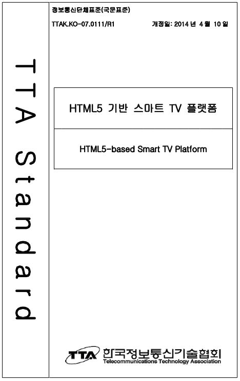 |
|
App Service Overview
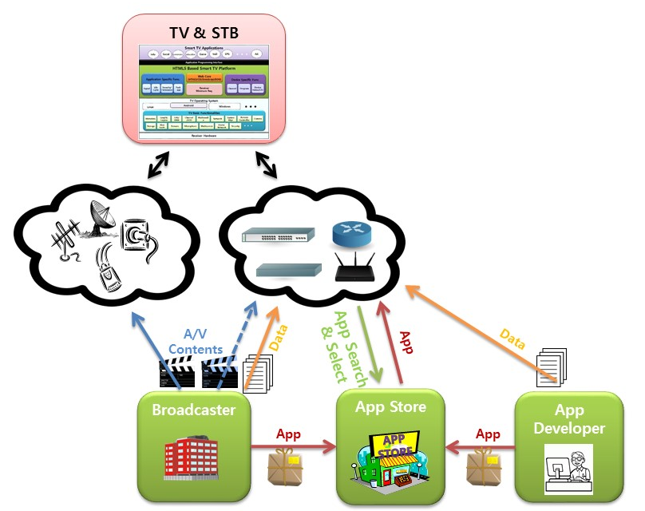Smart TV Structure
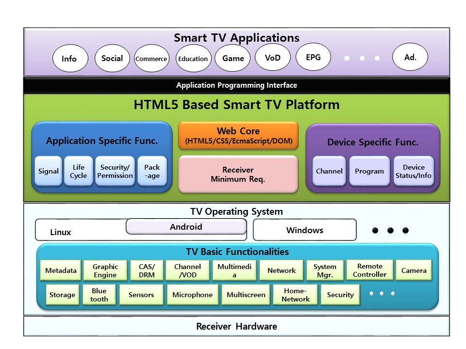Timeline of Spec.
- Mar. 2012 : Started from TTA PG804
- Mar. 2013 : First Spec. was published (TTAK.KO-07.0111)
Focus to Smart TV Basic functionalities - Apr. 2014 : Second Spec. was published (Revision 1) (TTAK.KO-07.0111/R1)
Focus to Smart TV Advanced functionalities - Current : New Technical Req. are under discussion
For example, contents sync., remote app control, payment, user voice/gesture input, ...
“This standard proposes the generalized technology criteria for development, distribution and exection of smart TV application running on HTML5 based smart TV Platform.”
“TV platform specification to support hybrid applications on integrated environments between broadcast and broadband.”
Application Model
Application Types
Application Lifecycle
Application Types
It suggests the four criteria to classify Smart TV application
- Execution Method
( Store App / Signal App / Broadband App ) - App Packaging
( Pakcage App / Non-Package App ) - Broadcasting Relation
( Broadcast Activated App / Inactivated App ) - Channel Bound
( Channel Bound App / Unbound App )
Application Lifecycle
Application can be launched ...
- User Selection
- API Call
- Application Signal
Application can be exit ...
- Channel change
- API Call
- Application Signal
- Application Priority
- EXIT Key
- Exception and Etc.
W3C Profile for Smart TV
“Considering Smart TV device's features like screen resolution and input method, some W3C specifications are not suitable to TV environment.”
Reference to [ OIPF Profile ]
Open IPTV Forum Feature Package Specification,
'Volume 5a - Web Standards for TV Profile [V1.0.0]', April 2014
In Addtion, ...
- Virtual KeyCode Definition
- Geolocation API
- Media APIs profile for Broadcast video
Smart TV Extended API
... the set of interfaces to support smart TV specific features such as smart TV application, broadcasting resources, smart TV device and other advanced functionalities.
Even if these kind of APIs are surely needed to develop smart TV application, they does not defined in W3C specification.
Extended API structure
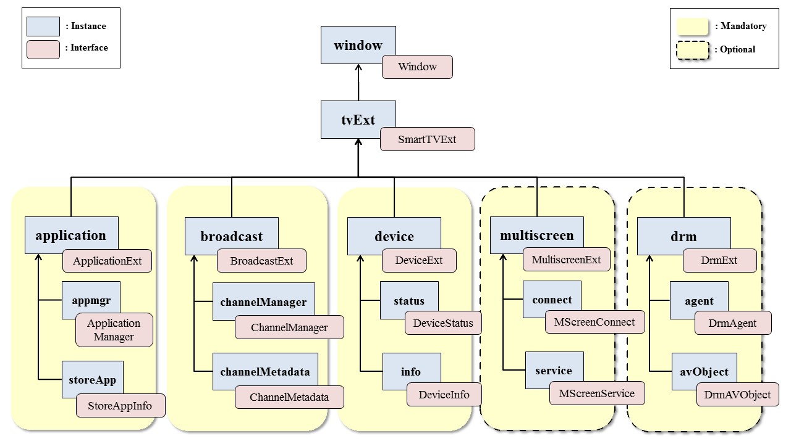SmartTVExt Interface
- Declares as an attribute of Window :
return the object that exposes the Smart TV Extended APIs.
Entry object to access Extended APIs
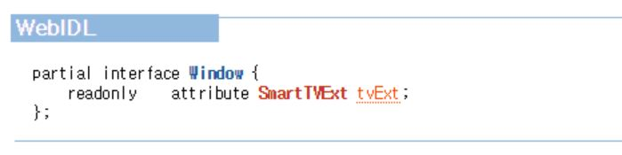 - SmartTVExt has the instances of Extended APIs as an own attribute
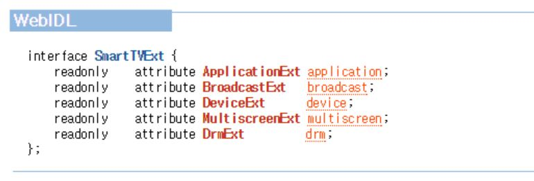
Application Interface
- To support the management for the current running application;
application create/destroy, application show/hide, control for keys and permission, and so on. - To get the detail information about store apps that are installed on the current Smart TV receiver
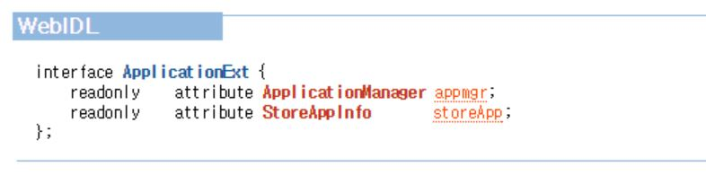
Application Sub Interfaces
| 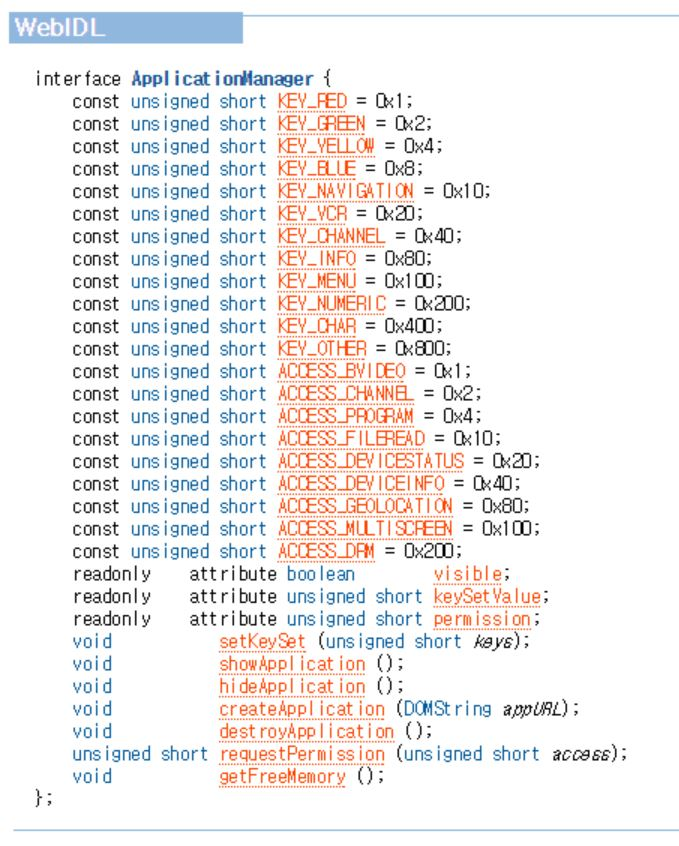 | 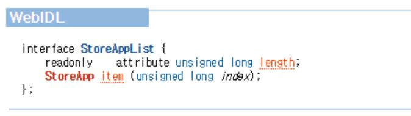 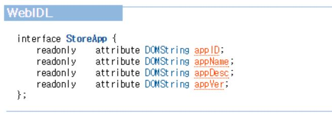 |
Broadcast Interface
- To get information about smart TV specific features; channel and program
- The smart TV application can get and utilize the various attributes of channel such as name, number and sourceURI, and the attributes of program such as name, description, start time, duration, element audio/video and so on.
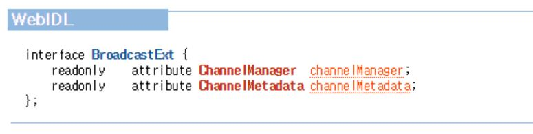
Broadcast Sub Interfaces
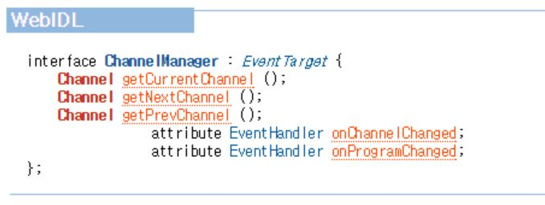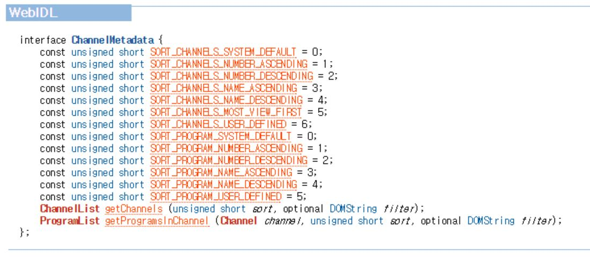
Device Interface
- To get the detailed information for the device which the application is running on.
- The information includes the device’s capability and network configuration as well as device specific attributes like manufacturer, model name, HW or SW version and so on.
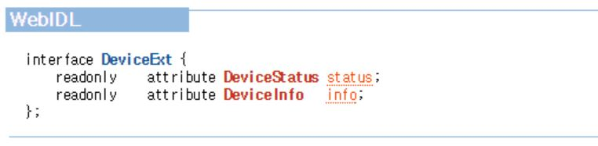
Device Sub Interfaces
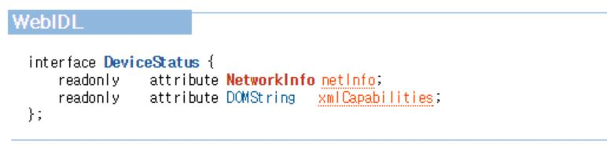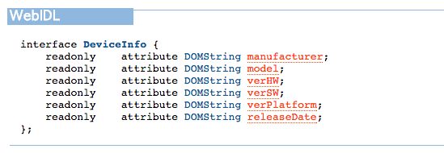
Multiscreen & DRM Interface
- Advanced Features for smart TV platform: Optional Implementation
- Multiscreen interface : the application can be connected to the companion devices like smart phone and tablet and then it can communicate with the target application running on the specific companion device.
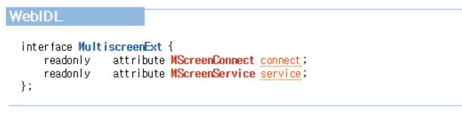 - DRM interface : the method to communicate with DRM agent of the device and to handle DRM-related information of object playing DRM-protected contents.
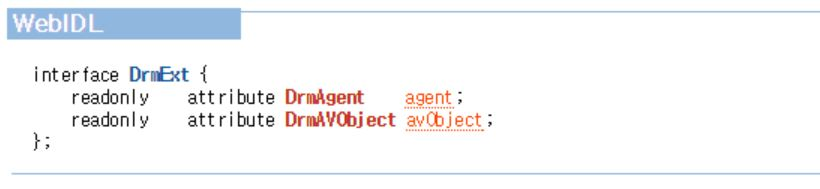
Multiscreen & DRM Sub Interface
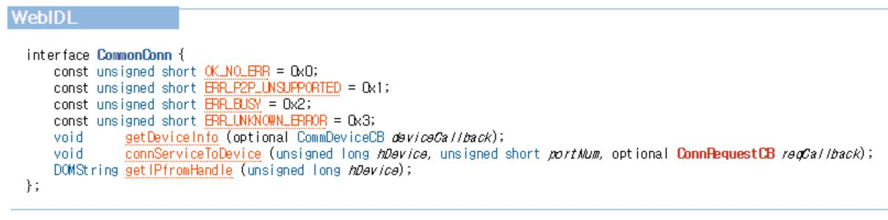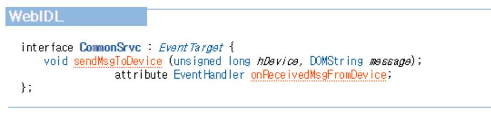
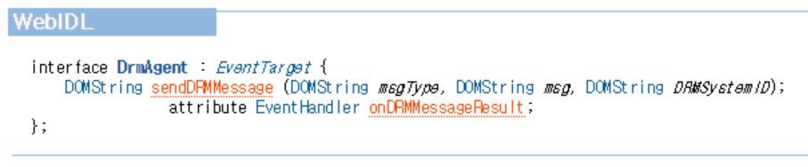
Broadcast Video & Channel Control
- No Extended API for Broadcast Video & Channel Operation in the linear broadcasting environments
- Instead, Adopt HTML5 <video> element to do it
- No syntax change for the properties of an current HTML5 <video> element
- New semantic requirements are defined when it uses for broadcasting video and channel.
Video binding & unbinding

Example Code
/* HTML5 Markup */
/* CSS attributes */
.tvVideo {
left: 200px;
height: 400px;
}
/* Javascript Codes : Binding */
function myLoad() {
var currentChannelURI = tvExt.broadcast.channelManager.getCurrentChannel().sourceURI;
var tvVideo = document.getElementById(“tvVideo”);
tvVideo.src = currentChannelURI;
}
/* Javascript Codes : Channel Change */
function channelUp() {
var nextChannelURI = tvExt.broadcast.channelManager.getNextChannel().sourceURI;
tvVideo.src = nextChannelURI;
}
Application Signaling
To support the application’s lifecycle control according to application signal provided by broadcaster.
Reference to [DVB Signal]
ETSI TS 102 809 V 1.1.1, “Digital Video Broadcasting (DVB); Signalling and carriage of interactive applications and services in hybrid broadcast / broadband environments", January 2010."
[DVB Signal] Profile
- The followings among AIT descriptors defined in [DVB SIGNAL] are supported.
- application descriptor
- application usage descriptor
- transport protocol descriptor
- simple application location descriptor
- application name descriptor
- As application delivery protocol, this specification support HTTP only and it doesn't support application delivery through DSMCC.
Application Packaging
All store apps (package apps) distributed and installed through App Store shall be compressed and packaged by specific format.
Reference To [W3C Widget]
[W3C Widget] Profile
- New URI scheme is defined for "id" attribute
tvapp://widget.organization_id.application_id
- apptype element
- To define application type related to application execution method
- To indicate whether or not it can be launched without network connection
- appdomain element
- To support the application can access any resources in specific domain under the same-origin policy
Other Features
- Protocol and Contents Formats
- HTTP/HTTPS, RTSP, MPEG-DASH
- Graphic/Broadcast Contents/Broadband Contents Format
- Receiver Minimum Requirements
- screen resolution, color format, text input method, video scaling factor, font, input devices and so on.
- Profiles
- To define the implementation coverage and the specific restrictions for this specification.
- full profile, broadcast related profile, basic package profile and advanced package profile
Smart TV App Demos
- Broadcast Activated Applications
- Multiscreen Service Application
Conformance Test &
Testing Environments
Receiver Conformance Test for HTML5-based Smart TV Platform
(TTAK.KO-07.0119)
| 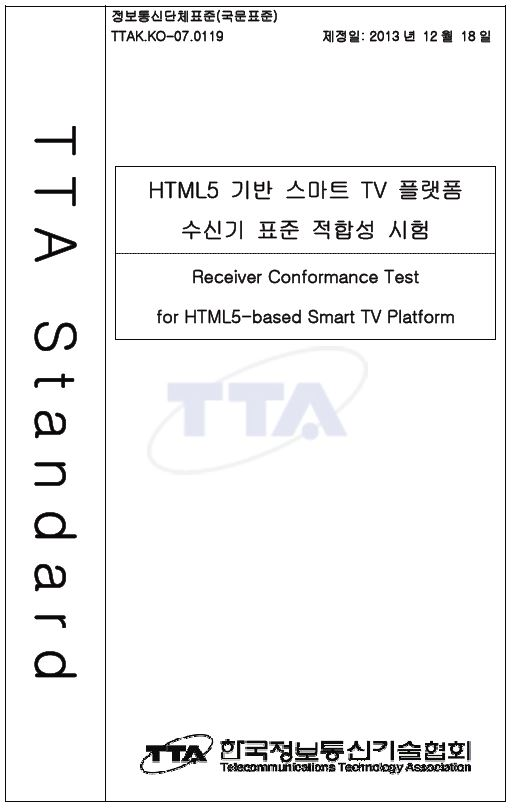 |
|
Test Cases
| Category | Description | Count |
|---|---|---|
| App Control |
|
12 |
| App Signal |
|
19 |
| App Package |
|
25 |
| Format |
|
29 |
| Protocol |
|
4 |
| HTML5 |
|
57 |
| Extended API |
|
43 |
| Security |
|
3 |
| Receiver Req. |
|
14 |
Test Cases Dev. Framework
| 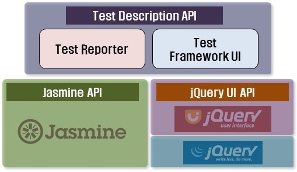 |
|
Test Cases Code Example
TestCase("00060050", function(){
var waitFlag, recvMsg;
TestStep("1", function(){ var isDutInit = true; expect(isDutInit).toBeTruthy(); });
TestStep("2", function(){ var currentCh = 'CHA'; expect(currentCh).toEqual('CHA'); });
TestStep("3", function(){
requestUserAction("Please, press OK Key",function(){},function(){});
runs(function(){
$('#tc_canvas').each(function(index, element){
var context = element.getContext("2d");
context.clearRect(0, 0, element.width, element.height);
context.beginPath();
context.save();
context.fillRect( 30, 15, 240, 120 );
context.clearRect( 60, 30, 180, 90 );
context.strokeRect( 90, 45, 120, 60 );
context.restore();
});
$('#ref_img').attr('src', 'img/ref_60050_01.jpg');
});
AskForConfirmation("Check the Pass Criteria",function(){},function(){});
});
});
Test Case Execution Example
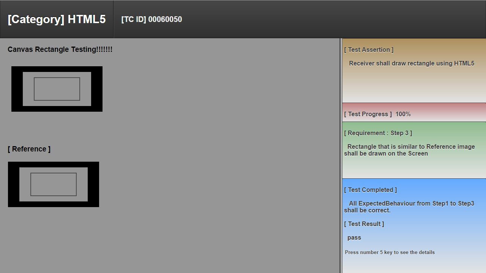Conformance Testing Environment
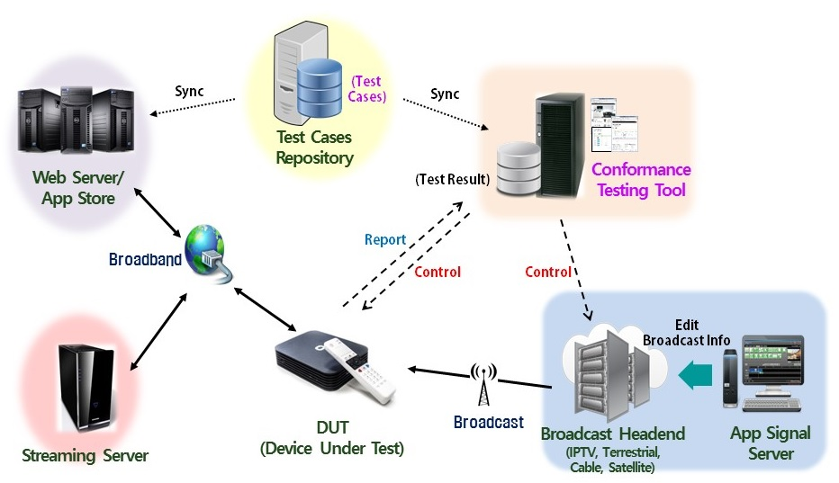Conformance Test Demo
Conclusion
- Smart TV Platform specification based HTML5 web core
- Hybrid TV System for integrated Smart TV application between broadcast and broadband
- Conformance Test Specification, TestSuite & Environment
- Beyond Smart TV, Toward Smart Media